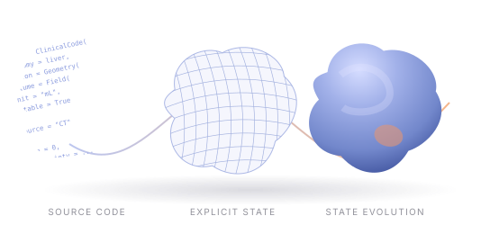

ClinicalCode
Animating the Clinical Source Code
of Disease Progression
Clinical observations → executable state → inspectable futures


01 · COMPILE THE EVIDENCE
Observations become an explicit state.
Ground clinical fields in imaging tools and pre-decision context.
Clinical observations
{
context,
anatomy,
lesion,
phenotype,
physiology,
history,
time,
provenance
}02 · INSPECT THE SOURCE CODE
A field is more than a value.
Clinical meaning travels with the state, all the way through the rollout.
"lesion.volume": { "value": null, "type": "float", "unit": "mL", "observability": "missing", "uncertainty": null, "source": null, "mutability": "mutable" }
03 · ROLL FORWARD UNDER CANDIDATE ACTIONS
One starting state. Separate trajectories.
Time changes explicit fields; the renderer makes those changes visible.
Illustrative rule-driven trajectories · viability proxy visualized on schematic 3D geometry
04 · VALIDATE, THEN DECODE
Each change can be checked.
A validated trajectory becomes an auditable input to treatment-action decoding.
Documented treatment actions
Evaluate action prediction.
Inspect the trajectory behind it.
does not establish treatment benefit.
MEDICAL WORLD MODELS, WITH AN EXPLICIT INTERFACE
Inspect the state.
Understand what changed.
qic999.github.io/projects/ClinicalCode
Explore the framework, interactive states, and CT / MRI results.